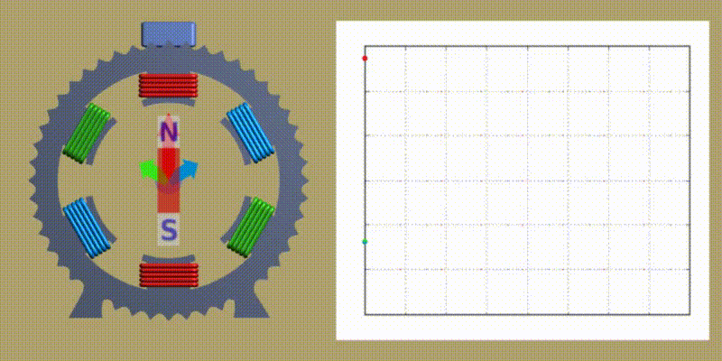

Los generadores eléctricos de inducción (realmente las maquina eléctricas de inducción, ya que pueden ser motores o generadores) se caracterizan por una curva que muestra la relación entre el par mecánico en su eje de giro con la velocidad de giro de este eje. Ver siguiente figura.
Fig 1: "Curva par mecánico vs Velocidad de giro" de una máquina eléctrica de inducción.
Existe un punto de inflexión que ocurre a una velocidad de giro característica del generador, la velocidad de sincronismo. Esta velocidad corresponde a la velocidad de giro del flujo magnético creado en su entrehierro por el bobinado del estator. El siguiente gráfico animado muestra el corte transversal de una maquina de inducción trifásica (se ha eliminado el rotor para mayor claridad).

Cada fase de la Red está conectada a una bobina del estator (una por color). El imán que se presenta corresponde con la suma vectorial de los flujos magnéticos creados por cada una de las bobinas, alimentadas por cada una de las fase de la Red.
Cuando no existe ninguna carga mecánica en el eje (es decir, cuando se deja girar libremente el eje), la velocidad de giro corresponde con la velocidad de giro de este imán equivalente.
En la figura 1 (arriba) se muestra que cuando se introduce una fricción en el eje, su velocidad de giro disminuye y la máquina crea un par mecánico que contrarresta la fricción. (Punto A.)
Por otro lado, si el eje es forzado a ir a una velocidad mayor que la de sincronismo, consume el par mecánico que es necesario para ese forzamiento, que aparece como energía eléctrica en las bobinas del estator. (Punto B.)
Es decir, dependiendo de si ponemos una carga mecánica en el eje o suministramos par mecánico, esta máquina se comporta como un motor o como un generador.
Un punto muy importante a retener en cuenta es que el comportamiento de esta máquina cambia en función de la velocidad de giro: la zona que nos interesa es la que existe alrededor de su velocidad de sincronismo.
La velocidad de sincronismo depende del numero de 'pares de polos magnéticos' (1 en el caso de la figura superior) y de la frecuencia de la red. En el caso de la figura, y asumiendo 50 ciclos/segundo, la velocidad de sincronismo es (50 ciclos/segundo)/ 1, o sea 50 revoluciones/segundo , o (50 * 60) revoluciones/minuto = (3.000 rpms).
Tomando la velocidad de sincronismo como referencia, en la curva de funcionamiento (Fig 1) se suele utilizar el valor relativo de las revoluciones del eje respecto de las revoluciones de sincronismo, en vez del valor absoluto de las revoluciones. Este valor se denomina deslizamiento (generalmente representado con la letra 's')
s = (VelocidadReal - VelocidadSincronismo) / VelocidadSincronismo
o
s = (VelocidadReal / VelocidadSincronismo) - 1